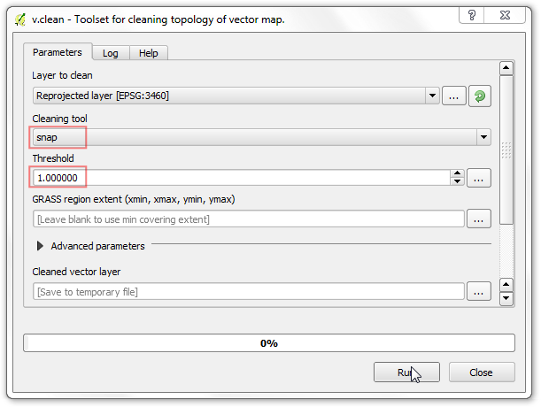

Georeferenciar Hojas Topográficas y Mapas Escaneados¶
Advertencia
Este tutorial está ahora obsoleto. Una versión nueva y actualizada está disponible en Georeferenciar Hojas Topográficas y Mapas Escaneados (QGIS3)
La mayoría de los proyectos SIG requiere la georeferenciación de algunos datos ráster. La georeferenciación es el proceso de asignar coordenadas del mundo real a cada píxel del ráster. Muchas veces estas coordenadas son obtenidas haciendo estudios de campo - colectando coordenadas con un dispositivo GPS para unas pocas entidades fácilmente identificables en la imagen o mapa. En algunos casos, donde buscas digitalizar mapas escaneados, puedes obtener las coordenadas de las marcadas en la misma imagen del mapa. Usando estas coordenadas de muestra o PCTs (Puntos de Control del Terreno), la imagen es ajustada y se la hace coincidir dentro del sistema de coordenada elegido. En este tutorial discutiré los conceptos, estrategias y herramientas dentro de QGIS para alcanzar una georeferenciación de alta exactitud.
Vista general de la tarea¶
Usaremos un mapa escaneado del sur de la India del 1870 y lo georeferenciaremos usando QGIS.
Otras habilidades que aprenderá¶
Cómo determinar el dátum y sistema de coordenadas para mapas antiguos.
Obtener los datos¶
El sitio web Hipkiss’s Scanned Old Maps tiene una excelente colección de mapas escaneados sin derechos reservados que uno puede usar para investigación.
Descargue el mapa 1870 del sur de la India y guárdelo como una imagen JPG en su disco duro.
{kind=link}
Para su comodidad, puede descargar directamente una copia del conjunto de datos del enlace abajo:
{kind=link}
Procedimiento¶
1. Georeferencing in QGIS is done via the ‘Georeferencer GDAL’ plugin. This is a core plugin - meaning it is already part of your QGIS installation. You just need to enable it. Go to and enable the Georeferencer GDAL plugin in the Installed tab. See Uso de Complementos for more details on how to work with plugins.
El complemento está instalado en el menú Ráster. Clic en para el abrir el complemento.

La ventana del complemento está dividida en 2 secciones. La sección superior donde se mostrará el raster y la sección inferior donde aparecerá una tabla que muestra tus PCTs.
Ahora abriremos nuestra imagen JPG. Vaya a . Navegue a la imagen descargada del mapa escaneado y clic en Abrir.
En la siguiente ventana, se le pedirá elegir el sistema de referencia de coordenadas (SRC) del ráster. Esto es para especificar la proyección y datos de sus puntos de control. Si ha recogido los puntos de control de terreno usando un dispositivo GPS, tendrá un SRC WGS84. Si está georeferenciando un mapa escaneado como este, puede obtener la información SRC del mismo mapa. Mirando a nuestra imagen de mapa, las coordenadas están en Lat/Lon. No hay información dada sobre el dátum, así que tendremos que asumir una apropiada. Debido a que es la India y el mapa es bastante antiguo, podemos apostar que el datum Everest 1830 nos daría buenos resultados.
Verá que la imagen es cargada en la sección superior.

Puede usar los controles de acercamiento/desplazamiento en la barra de herramientas para aprender más sobre el mapa.

Ahora necesitamos asignar coordenadas a algunos puntos en este mapa. Si mira de cerca, verá una cuadrícula de coordenadas con marcas. Usando esta cuadrícula, puedes determinar las coordenadas X y Y de los puntos donde la cuadrícula intersecta. Clic en Agregar Punto en la barra de herramienta.

En la ventana emergente, ingrese las coordenadas. Recuerde que X=longitud y Y=latitud. Clic en Aceptar.

Notará que la tabla PCT ahora tiene una fila con detalles de su primer PCT.

De forma similar, agregue por lo menos 4 PCTs que cubran toda la imagen. Mientras más puntos tenga, más exacta será registrada su imagen a la coordenadas destino.

Una vez que tenga suficientes puntos, vaya a .

En el diálogo Configuración de transformación, elija para Tipo de transformación Thin Plate Spline. Dele nombre a su raster de salida como 1870_southern_india_modified.tif. Elija EPSG:4326 como la SRC destino de manera que la imagen resultante esté en un dátum ampliamente compatible. Asegúrese que la opción Cargar en QGIS cuando esté listo esté marcada. Clic en Aceptar.

De vuelta en la ventana Georeferenciador, vaya a . Esto iniciará el proceso de ajuste de la imagen usando los PCTs y creando el ráster destino.

Una vez que termine el proceso, verá la capa georeferenciada cargada en QGIS.

La georeferenciación ahora está completa. Pero como siempre, es buena práctica verificar tu trabajo. Como verificamos si nuestra georeferenciación es exacta? En este caso, cargue el archivo shape de límites de países de una fuente confiable como el conjunto de datos Natural Earth y compárelos. Notará que coinciden bastante bien. Existe algun error y se puede corregir tomando más puntos de control, cambiando los parámetros de transformación e intentando un datum diferente.

If you want to report any issues with this tutorial, please comment below. (requires GitHub account)